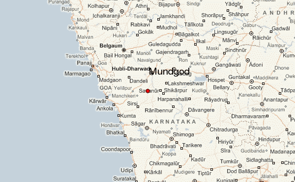
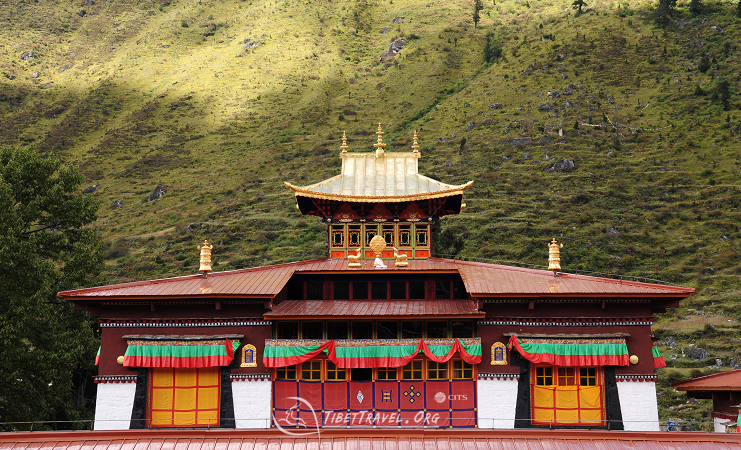

The Tibetan Colony in Tattihalli village near Mundgod Taluk in Uttara Kannada district (or North Canara) is one among the six Tibetan settlements in the state of Karnataka. Doeguling Tibetan Settlement, as it is officially known, was established in 1966. The settlement is divided into 11 villages which covers an area of 4000 acres of land. Two villages Gaden and Drepung among the eleven are monastic villages. “It is the largest Tibetan refugee settlement in the world inhabited by 17,000
Tibetans and has a cluster of seven monasteries, a Tibetan Medical and Astro Institute, 20 schools, two homes for the elderly and a cooperative society
MONASTERIES OF TIBETIAN COLONY
GADEN, DREPUNG and SERA monasteries are considered as
the three monastic seats of Gelugpa Sect.
Gaden and Drepung Monasteries are in Doeguling
and Sera Monastery is located in Lugsung Samdupling
Settlement in Bylakuppe.
All the major four sects within Tibetan Buddhism
Gelug, Sakya, Nyingma and Kagyu have their
monasteries in the Doeguling settlemen
Tsongkhapa Lobsang Drakpa,
the founder of Gelugpa sect,
founded Gaden Monastery in 1409 at Lhasa.
“When the last surviving members of Gaden Monastic University from
Tibet arrived in India as refugees, they felt the preservation
of Tibetan culture and religion to be a serious
challenge for the Tibetans if they are to retain their
cultural identity as a people…In spite of many harsh realities of
life imposed upon them, they re-established Gaden in South India in 1971,
and were able to revive the general pattern of studies that once existed
in Tibet” (Snow Lion 1988). Tashi Pelden
and Sakya Yeshe, Tsongkhapa's disciples, founded Drepung
and Sera Monasteries respectively in Central Tibet.
“During the lifetime of Second Gaden Tripa (highest living Guru in the Gelug sect of Tibetan Buddhism) Great Khedup Je, four groups of sangha communities mushroomed in Gaden Monastery.
These four groups were later mich were then named two colleges Shartse (under the leadership of Mahathera Rinchen Gyaltsen), and Jangtse (under the leadership of Horton Namkha Palzang)”
LOCATION

MONESTARY
The RATO MONESTARY was established in
14th century in Tibet to preserve Buddhist teachings and
it was then called “Tiger Nest” by the 5th Dalai Lama. In 1983, Rato Dratsang was
re-established in exile at Mundgod. It is an eco-friendly
monastery and the architecture of the Dratsang is distinct from other
monasteries in Mundgod. “As part of a capital fund drive to construct the new temple
and monastic campus for Rato Dratsang, a traveling exhibition of photographs
by Geshe Nicholas Vreeland has raised USD 400,000 (Rato 2011).
The re-construction was completed in 2011. Geshe Nicholas Vreeland, also known
as Monk with a Camera, is the Abbot of Rato Dratsang and he became the first
non-Tibetan origin Abbot who was appointed in 2012. Monk with a Camera, the
2013 documentary directed by Guido Santi and Tina Mascara was based on the
life of Nicky Vreeland. The monastery is owned by
Tibetan Government and His Holiness Dalai Lama appoints the Abbot of the monastery
DRESS CULTURE OF TIBETIAN PEOPLE
The only nunnery in the Doeguling Settlement
is Jangchub Choeling Nunnery which was founded in 1987. The vision was to construct
an educational institution for Tibetan women of all ages to study the Buddhist
religion and scriptures. “In 1986, a small prayer hall was built with the help
of the Tibetan Government in Exile. Disused houses belonging to the neighboring nursing
home were renovated with the support of the German Aids to Tibetans and the Tibetan
Centre Hamburg in Germany. A year later in 1987, the first 18 nuns from the local
Tibetan settlement in Mundgod moved into the nunnery” (JCN 2018).
Besides these major monasteries, there are several other monasteries, personal temples,
colleges, institutes and other religious centers of education in Mundgod.
The most of them are located in the two monastic villages of Drepung and Gaden.

Doeguling is the second Tibetan settlement established in the state of Karnataka and “unlike the earlier Tibetan settlements elsewhere in India which were mainly supported by the Indian government, foreign voluntary agencies took up the maximum responsibility in establishing this settlement” (Choedup 2015: 90). Doeguling is the first settlement in South India to sign Lease Agreement under Tibetan Rehabilitation Policy 2014.
“According to the statistics (1971 Mundgod Taluk Census) nearly five times the cultivable area is still under forest. Thus the initial reason for the establishment of the Tibetan colony in Mundgod was to develop the area and bring more land under cultivation. This type of development was urgently needed since the natural resource was going waste. The land in the region is fairly fertile and the rain is quite moderate. It was difficult to settle Indians there because of the popular opinion that Mundgod and other surrounding areas were places of malaria. Thus the establishment of Tibetan settlement at Mundgod was intended to serve as an incentive to further settlement” (Palakshappa 1978: 20).
LIBRARY AT MUNDGOD
SHIASTU LIBRARY
Former library incharge, Geshe Tenpa Choklang says that When the monks escaped to India from Tibet, they were able to carry a few texts and books which they stored in a make-shift library at their transit camp in northeast India. After re-establishing in south India, the monastery was able to construct a good library which houses a large collection of Buddhist sacred texts. Geshe la also stressed that our monastery has a large collection of Buddhist texts compared to other monasteries. No other monastery has what we have here at the Drepung Gomang Library. This is a result of the many scholars from this monastery who have written texts, important commentaries, etcs. Our aim is to preserve all these works and make them available to our students.
With a scarcity of funds and other resources, we are not able to print out the many important texts to make them readily available to the students.
For donations on library, you are requested to send checks in favor of Drepung Gomang Education Society.
LORD BUDDHAS QUOTES
“Purity or impurity depends on oneself,
No one can purify another.”
“True love is born from understanding.”“True love is born from understanding.”
― The Buddha
“Long is the night to him who is awake; long is a mile to him who is tired; long is life to the foolish who do not know the true law.”